| Name | Image | Rarity | Type | Cost | Description |
|---|
| Recompense |  | Common | Status | 1 | Ethereal. Draw 1 card. Exhaust. |
| Plague |  | Curse | Curse | | Unplayable At the end of your turn, you are inflicted with 2 Poison. |
| Defend |  | Basic | Skill | 1 | Gain 5 (8) Block. |
| Penitence | 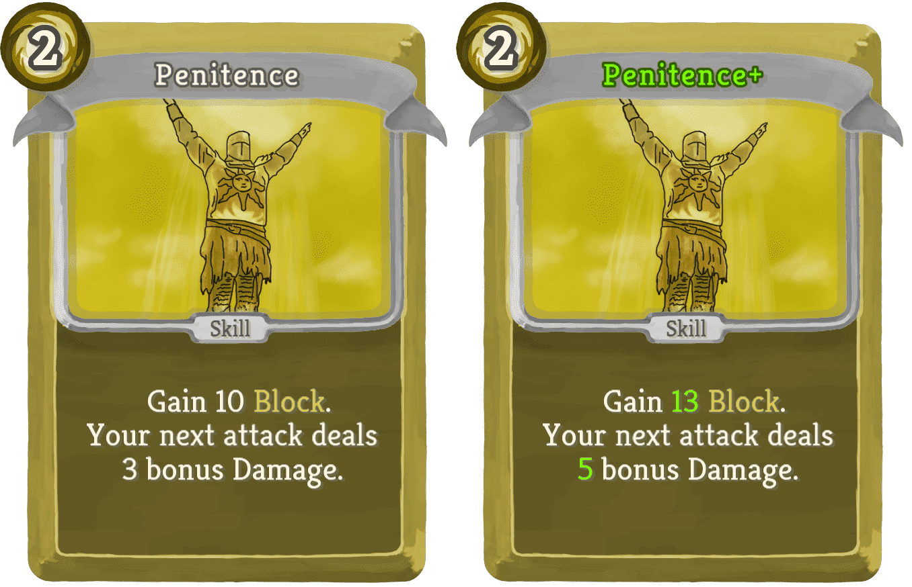 | Basic | Skill | 2 | Gain 10 (13) Block. Your next attack deals 3 (5) bonus Damage. |
| Smite |  | Basic | Attack | 2 | Deal 12 (16) Damage. Gain 2 (3) Regen. |
| Strike |  | Basic | Attack | 1 | Deal 6 (9) Damage. |
| Backlash |  | Common | Skill | 1 | Whenever you are attacked this turn, deal 5 (7) Damage back. |
| Charge Attack |  | Common | Attack | 6 (5) | Deal 9 Damage 2 times. Costs 1 less for each unplayed card in your discard pile. |
| Creeping Infection |  | Common | Skill | 1 (0) | Reduce your Poison by 3 (4) and heal the same amount. theforsaken:Unplayed: Apply 3 (4) Poison to ALL enemies AND yourself, and add a copy to your draw pile. |
| Eulogy |  | Common | Skill | 0 | (WORDS) Ethereal. Apply 1 (2) Vulnerable to ALL enemies. theforsaken:Unplayed: Your next attack deals 3 bonus Damage. |
| Fat Roll |  | Common | Skill | 1 | Gain 6 (8) Block. theforsaken:Unplayed: Draw an additional card next turn. |
| Fury Strikes | 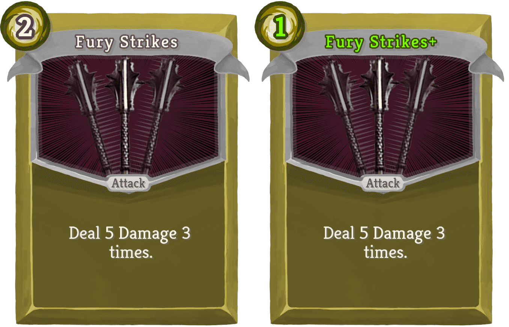 | Common | Attack | 2 (1) | Deal 5 Damage 3 times. |
| Horrifying Strike |  | Common | Attack | 1 | Deal 15 (20) Damage. Inflict 2 theforsaken:Fear on yourself. |
| Hymn of Patience |  | Common | Skill | 1 | Next turn, gain 1 (2) [E] and draw 1 (2) additional card. |
| Noble Sacrifice |  | Common | Skill | 0 | Exhaust a card. Draw as many cards as its cost (+ 1). |
| Panic Dive |  | Common | Skill | 1 | Gain 12 (15) Block. Shuffle 3 dazed into your discard pile. |
| Parry | 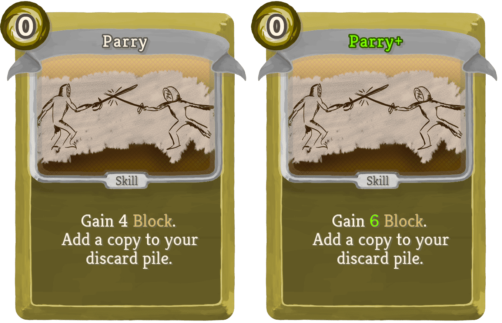 | Common | Skill | 0 | Gain 4 (6) Block. Add a copy to your discard pile. |
| Power Up |  | Common | Skill | 1 | Your next attack deals 3 (5) bonus Damage. |
| Preservation | 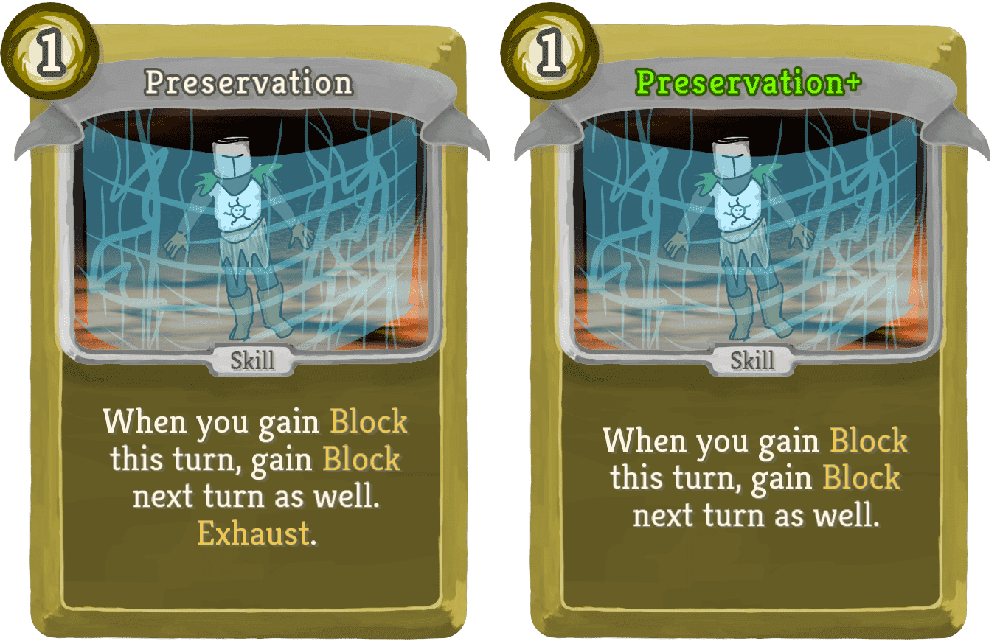 | Common | Skill | 1 | When you gain Block this turn, gain Block next turn as well. Exhaust. (not Exhaust.) |
| Quick Attack |  | Common | Attack | 0 | Deal 4 (6) Damage. Draw 1 card. Innate. |
| Raining Sunlight | 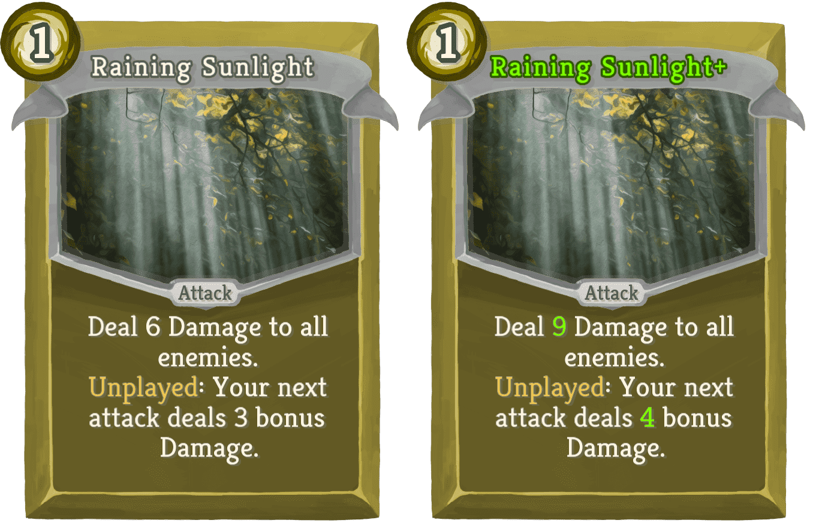 | Common | Attack | 1 | Deal 6 (9) Damage to all enemies. theforsaken:Unplayed: Your next attack deals 3 (4) bonus Damage. |
| Scorching Sunlight |  | Common | Attack | 1 | Deal 4 (5) Damage to all enemies 2 times. Shuffle a burn into your discard pile. |
| Shield Bash | 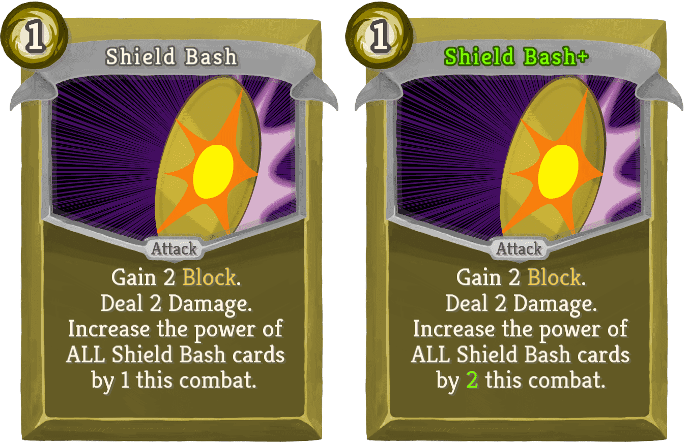 | Common | Attack | 1 | Gain 2 Block. Deal 2 Damage. Increase the power of ALL Shield Bash cards by 1 (2) this combat. |
| Shield Charge |  | Common | Attack | 0 | Deal 5 (7) Damage. theforsaken:Unplayed: gain 3 (4) Block next turn. |
| Store Up | 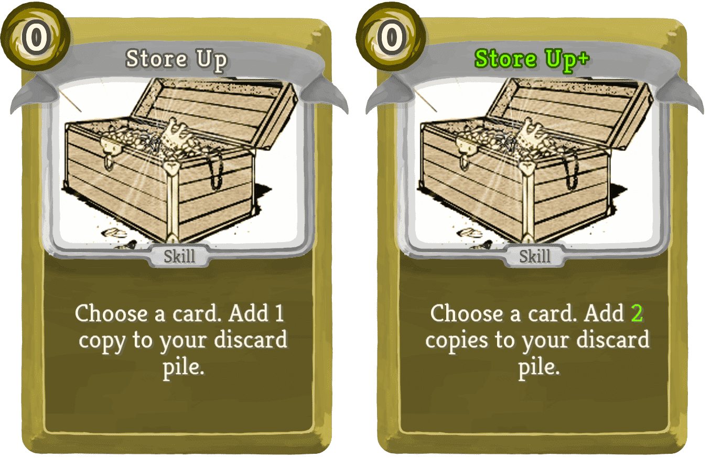 | Common | Skill | 0 | Choose a card. Add 1 (2) copy (copies) to your discard pile. |
| Thunderbolt |  | Common | Attack | 1 | Deal 5 (7) Damage. Also targets 1 random enemy. |
| Ancient Words |  | Uncommon | Power | 1 | (WORDS) Gain 2 (3) artifact. |
| Battle Hymn | 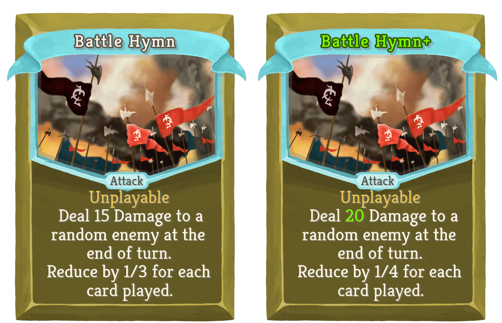 | Uncommon | Attack | | Unplayable Deal 15 (20) Damage to a random enemy at the end of turn. Reduce by 1/3 (1/4) for each card played. |
| Binding Thorns |  | Uncommon | Skill | 1 | Whenever the target attacks, it takes 4 (6) Damage. The Damage is reduced by 1 with each attack. |
| Blessed Weapon | 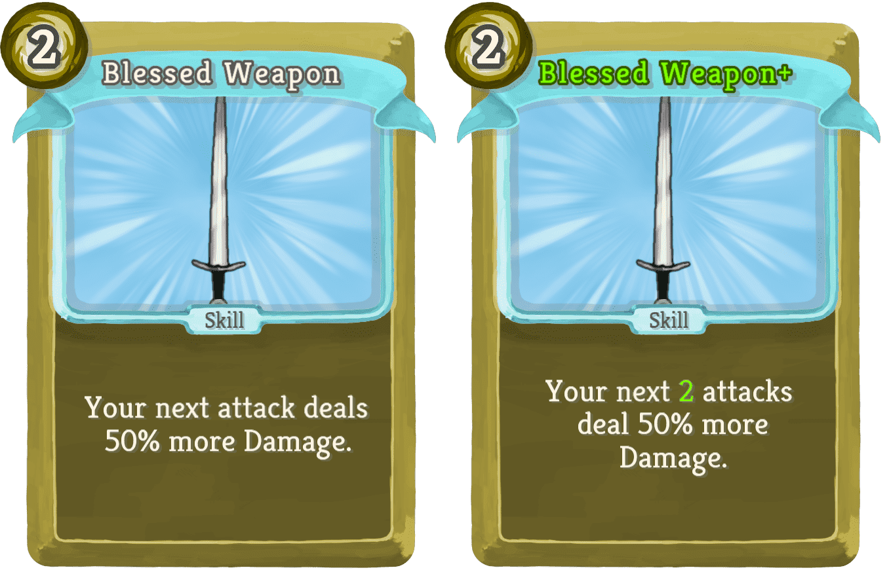 | Uncommon | Skill | 2 | Your next (!M!) attack(s) deals (deal) 50% more Damage. |
| Blight of Famine |  | Uncommon | Skill | 1 (0) | Transfer your Vulnerable and Weak to an enemy. theforsaken:Unplayed: Apply 3 (5) Vulnerable and Weak to ALL enemies AND yourself. |
| Blind Faith | 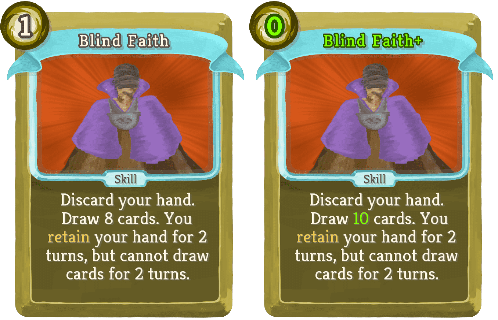 | Uncommon | Skill | 1 (0) | Discard your hand. Draw 8 (10) cards. You retain your hand for 2 turns, but cannot draw cards for 2 turns. |
| Bolster |  | Uncommon | Power | 1 | The first attack each turn applies 1 Weak and gains 3 Block.(Innate) |
| Bottled Plague |  | Uncommon | Skill | 2 (1) | Remove all your Poison. Receive a Poison Potion. |
| Bountiful Sunlight |  | Uncommon | Skill | 2 | Gain 4 (6) Regen. Exhaust. |
| Cleansing Light | 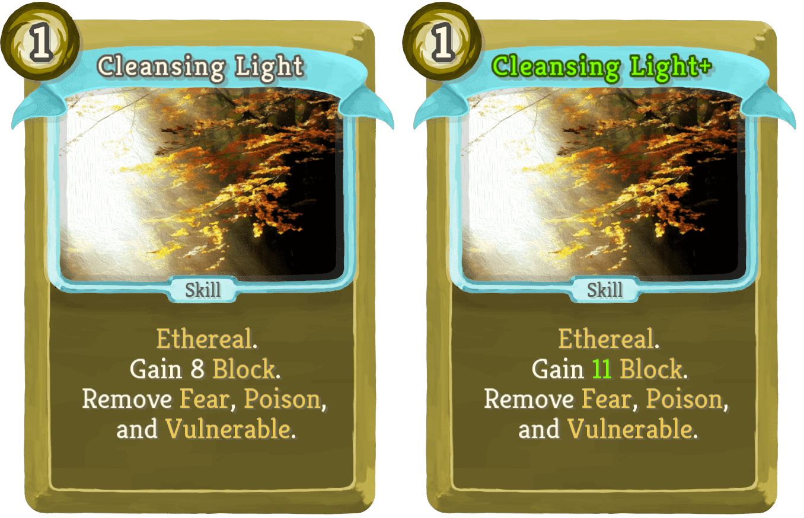 | Uncommon | Skill | 1 | Ethereal. Gain 8 (11) Block. Remove theforsaken:Fear, Poison, and Vulnerable. |
| Corrupted Word |  | Uncommon | Skill | 1 | (WORDS) Transfer your Poison to a random enemy. theforsaken:Unplayed: Apply 8 (6) Poison to (yourself, and 2x to) ALL enemies AND yourself (not AND yourself). |
| Coward's Brand |  | Uncommon | Attack | 2 | Deal 18 (24) Damage. If the target has theforsaken:Fear, the Damage is doubled. |
| Dark Bargain | 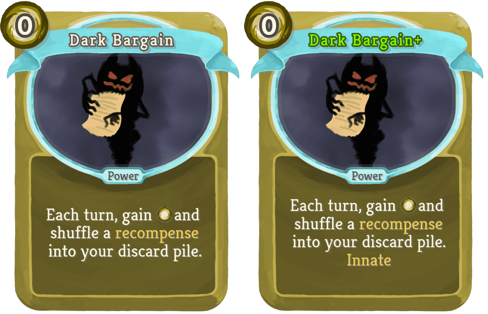 | Uncommon | Power | 0 | Each turn, gain [E] and shuffle a theforsaken:recompense into your discard pile.(Innate) |
| Dark Barrier |  | Uncommon | Skill | X | Prevent the next X (+ 1) times you would lose HP. Inflict X (- 1) Frail on yourself. Exhaust. |
| Defensive Stance |  | Uncommon | Power | 1 | Gain 5 (7) Plated Armor. |
| Devotion |  | Uncommon | Skill | 1 | Draw 2 (3) cards. Choose a card to put on top of your draw pile. Upgrade it. |
| Enfeeble |  | Uncommon | Attack | 2 | Deal 2 Damage 6 times. The target loses 4 (8) Strength this turn. Exhaust. |
| Healing Light |  | Uncommon | Skill | 1 | Heal 1 (2) HP for each unplayed card in your discard pile. (Discarded 0 unplayed cards) Exhaust. |
| Hymn of Rest |  | Uncommon | Skill | | Unplayable. Retain half your block next (for 2) turn(s). If you play 3 cards or fewer, retain all your block instead. |
| Inspiring Blow |  | Uncommon | Attack | 1 | Deal 9 (12) Damage. If this kills an enemy gain 3 (6) Block each turn. |
| Light Roll |  | Uncommon | Skill | 1 | Gain 3 (5) Block, apply 1 Weak. Add a copy to your hand. Exhaust. |
| Magic Weapon |  | Uncommon | Power | 1 | Each turn, gain 2 (3) bonus Damage for your next attack. |
| Precise Strike |  | Uncommon | Attack | 1 | Deal 4 (6) Damage, apply 1 Vulnerable. Add a copy to your hand. Exhaust. |
| Riposte |  | Uncommon | Power | 2 (1) | When your Block is broken, your next attack deals 50% more Damage. |
| Siphon Strike |  | Uncommon | Attack | 2 | Deal 14 (18) Damage. If this kills the target, heal 5 HP. |
| Solar Flare |  | Uncommon | Attack | 3 | Deal 27 (32) Damage to ALL enemies. Lose 2 Strength. |
| Spin Attack |  | Uncommon | Attack | 1 | Deal 6 Damage to a random enemy. Repeat for every 3 (2) Dexterity. |
| Terrorize |  | Uncommon | Skill | 2 | Apply 1 (2) theforsaken:Fear. Exhaust. |
| Tranquility |  | Uncommon | Skill | 2 (1) | Reduce target Strength by 1. Return half each turn. Permanently increase by 1. Exhaust. |
| Warding Hymn |  | Uncommon | Skill | | Unplayable Gain 12 (16) Block at the end of turn. Reduce by 1/3 (1/4) for each card played. |
| Word of Power |  | Uncommon | Attack | 2 | (WORDS) Deal 5 Damage. Increase by 3 (5) for each "Words" card in your deck. |
| Words of Might |  | Uncommon | Power | 1 | (WORDS) Whenever you play a skill, your next attack does 1 (2) bonus Damage. |
| Words of Pestilence | 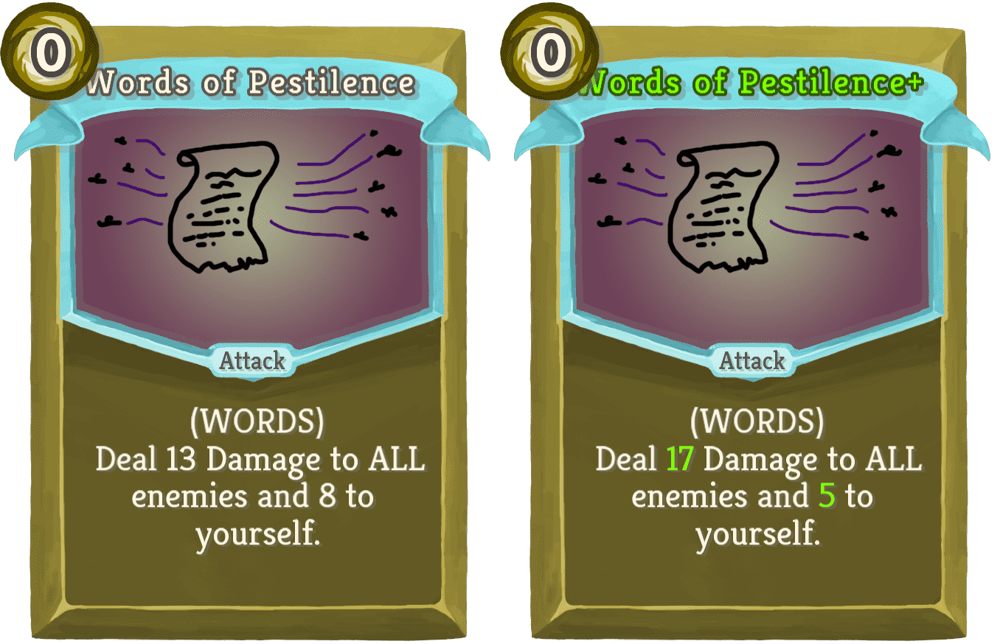 | Uncommon | Attack | 0 | (WORDS) Deal 13 (17) Damage to ALL enemies and 8 (5) to yourself. |
| Wrath of God | 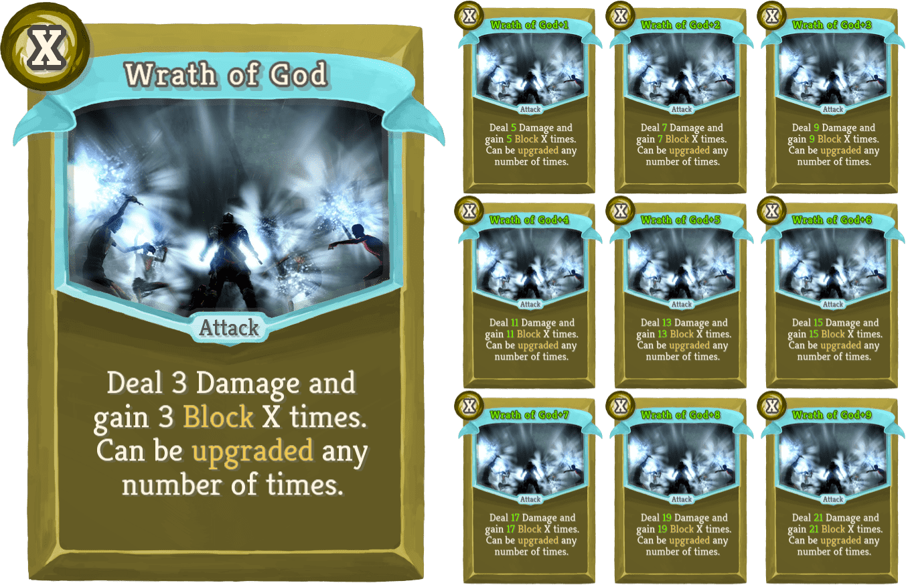 | Uncommon | Attack | X | Deal 3 (5) Damage and gain 3 (5) Block X times. Can be upgraded any number of times. |
| Confusion |  | Rare | Attack | 1 | If the target intends to attack, deal its Damage to a random enemy 3 times. Exhaust. (not Exhaust.) |
| Corrupt Deck |  | Rare | Power | 2 | Draw 2 more cards each turn. You can play only 3 (4) cards each turn. |
| Corrupted Form | 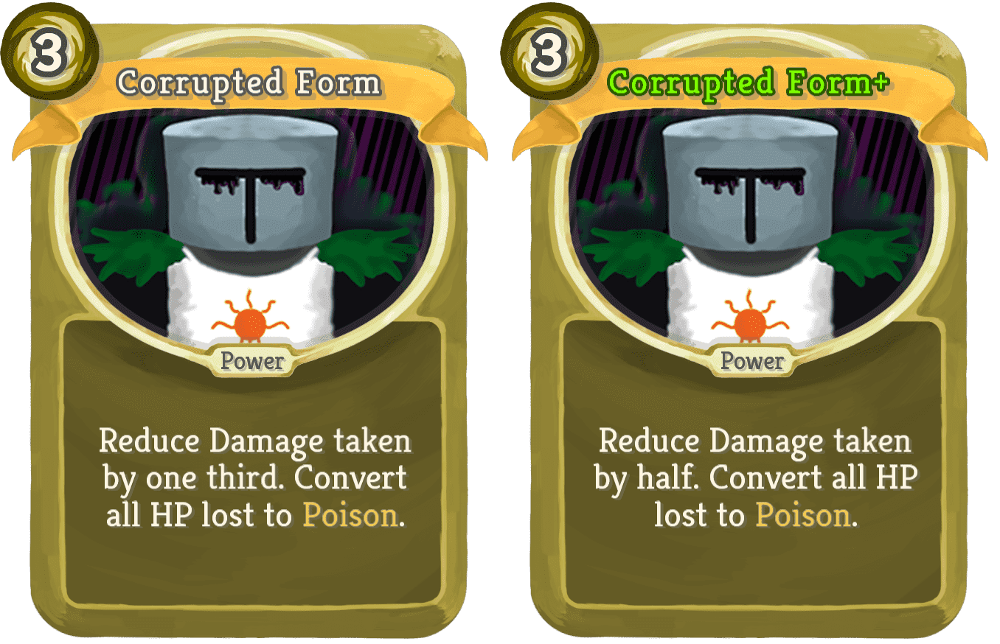 | Rare | Power | 3 | Reduce Damage taken by one third (half). Convert all HP lost to Poison. |
| Dark Rift |  | Rare | Attack | 1 | Deal 10 (15) Damage to ALL enemies AND yourself. Next turn, heal each twice as much. |
| Desperate Plea |  | Rare | Power | 3 | (WORDS) Remove all debuffs. Gain 4 (6) Strength. If you are below 1/2 hp, Gain [E] [E]. |
| Divine Guidance | 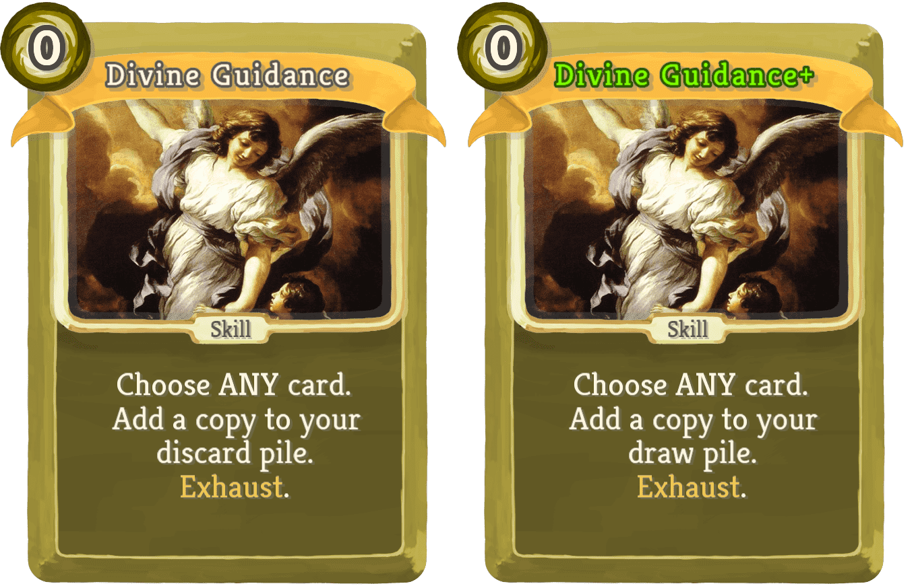 | Rare | Skill | 0 | Choose ANY card. Add a copy to your discard (draw) pile. Exhaust. |
| Fountain of Life |  | Rare | Power | 3 | At the end of battle, increase your Max HP by 2 (3). |
| Horror |  | Rare | Skill | X | Apply X (+ 1) theforsaken:Fear on an enemy. You cannot gain Block for 3 (2) turns. Exhaust. |
| Mantra |  | Rare | Skill | 2 | (WORDS) The first card you play next turn is repeated 1 (2) time(s). |
| Prudence | 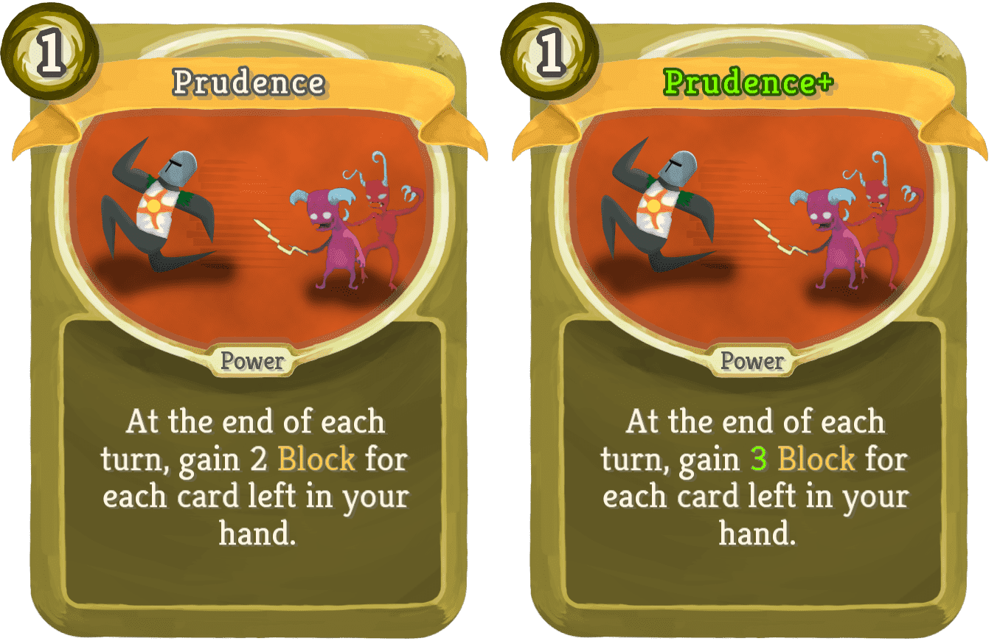 | Rare | Power | 1 | At the end of each turn, gain 2 (3) Block for each card left in your hand. |
| Purification |  | Rare | Attack | 3 | Deal 30 (39) Damage. Transfer your debuffs to the target. |
| Retribution | 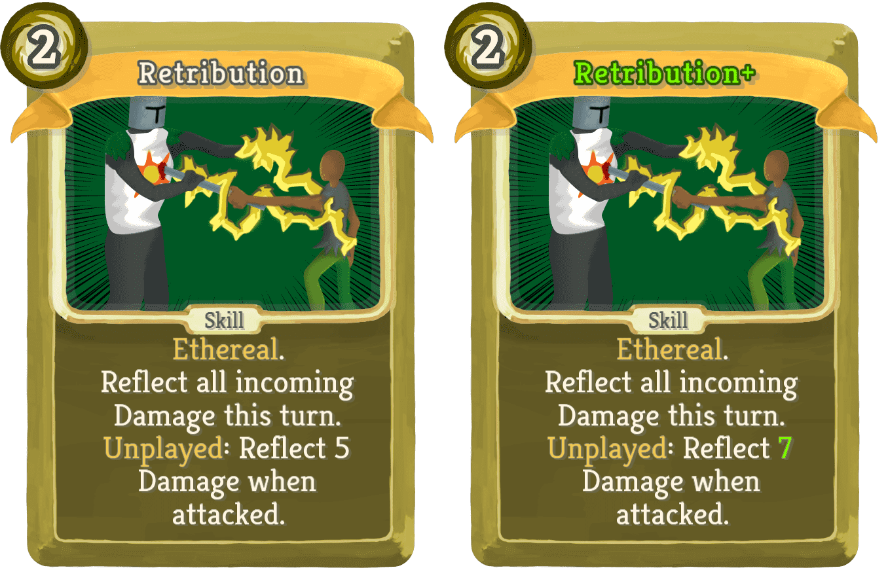 | Rare | Skill | 2 | Ethereal. Reflect all incoming Damage this turn. theforsaken:Unplayed: Reflect 5 (7) Damage when attacked. |
| Sacred Oath |  | Rare | Skill | 1 | (WORDS) Double (Triple) your Strength and Dexterity. Exhaust. |
| Sacrifice Soul | 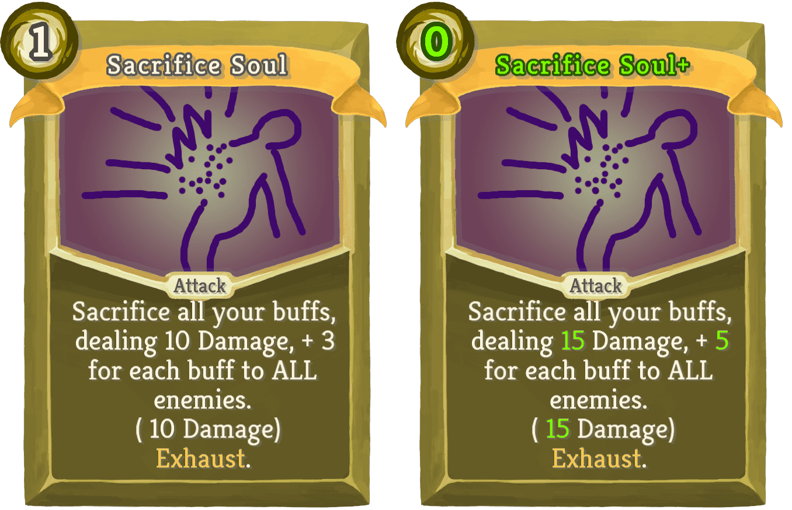 | Rare | Attack | 1 (0) | Sacrifice all your buffs, dealing 10 (15) Damage, + 3 (5) for each buff to ALL enemies. ( 10 (15) Damage) Exhaust. |
| Spreading Plague | 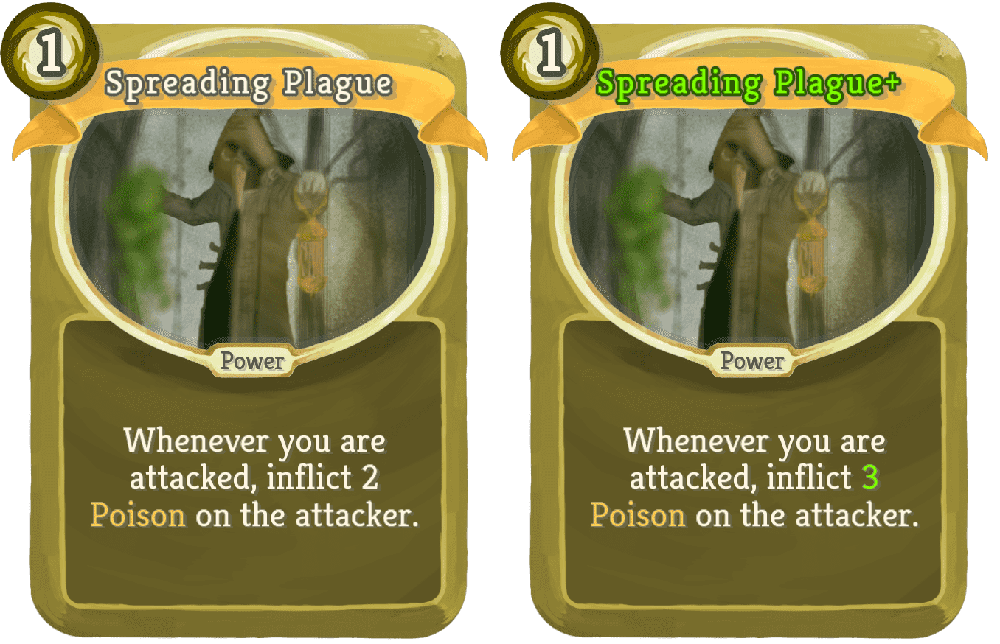 | Rare | Power | 1 | Whenever you are attacked, inflict 2 (3) Poison on the attacker. |
| Tears of Sunlight |  | Rare | Power | 2 | Gain 1 (2) Regen each turn. Lose 3 (2) Dexterity. |
| Temperance |  | Rare | Attack | 2 | Deal 6 Damage. Damage is increased by 3 (4) for each unplayed card in your discard pile. theforsaken:Unplayed: Shuffle this card into your draw pile. |
| Name | Image | Tier | Pool | Description | Flavor |
|---|
| Judgement Scales |  | Starter | Forsaken_gold_color | Each turn, gain Strength / Dexterity based on played cards. (Gain 1Strength if you've played no attacks, and 1Dexterity if you've played no skills.) | Seek balance in all things. |
| Gavel |  | Common | | Whenever you play 3 skills in a turn, gain 5 bonus damage. | Figuratively renders judgement. Literally renders unconscious. |
| Lifeblossom | | Common | | At the beginning of each battle, gain 3 regen. | This rare flower grows only in a hidden garden in a legendary forest. |
| Humble Egg | | Uncommon | | Whenever you add a Common card into your deck, Upgrade it. When you first draw a common card each turn, draw an extra card. | It's just an egg. |
| Scary Mask | | Uncommon | | The first attack played each combat inflicts 1Fear | Created to terrify the Spire's weaker denizens. |
| Kindling | 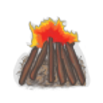 | Rare | | Whenever you rest at a rest site, increase your Max HP by 5. | Brighter flames seem to fend off the encroaching dark. |
| Plague Mask |  | Special | Forsaken_gold_color | Whenever you are inflicted with poison, apply it to a random enemy also. | It was believed these masks could prevent disease, but they only seem to spread it. |
| Armor of Thorns | 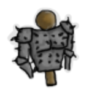 | Boss | Forsaken_gold_color | Whenever you gain Block, deal 3 damage to all enemies. | It may be good for battle, but it also prevents hugs :( |
| Pale Lantern |  | Boss | | Gain [E] at the start of your turn. Draw 1 less card each turn. | Provides a comforting glow in the dark. |
| Scales of Truth | | Boss | Forsaken_gold_color | Replaces JudgementScales. For every 3 unplayed skills, gain 1 dexterity. For every 3 unplayed attacks, gain 1 strength. | It is said that if one's heart is light as a feather, the Truth will be understood. |
{kind=link}
{kind=link}
{kind=link}
{kind=link}
{kind=link}
{kind=link}
{kind=link}
{kind=link}
{kind=link}
{kind=link}
{kind=link}
{kind=link}
{kind=link}
{kind=link}
{kind=link}
{kind=link}
{kind=link}
{kind=link}
{kind=link}
{kind=link}